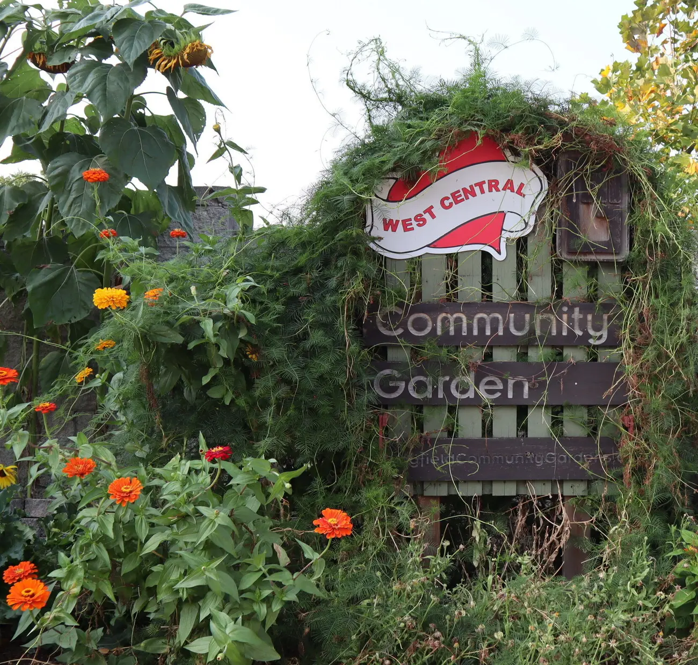
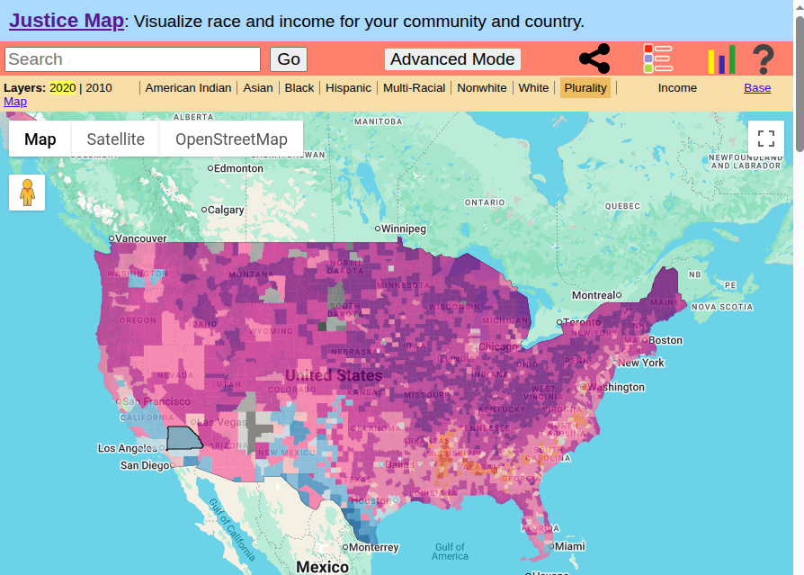
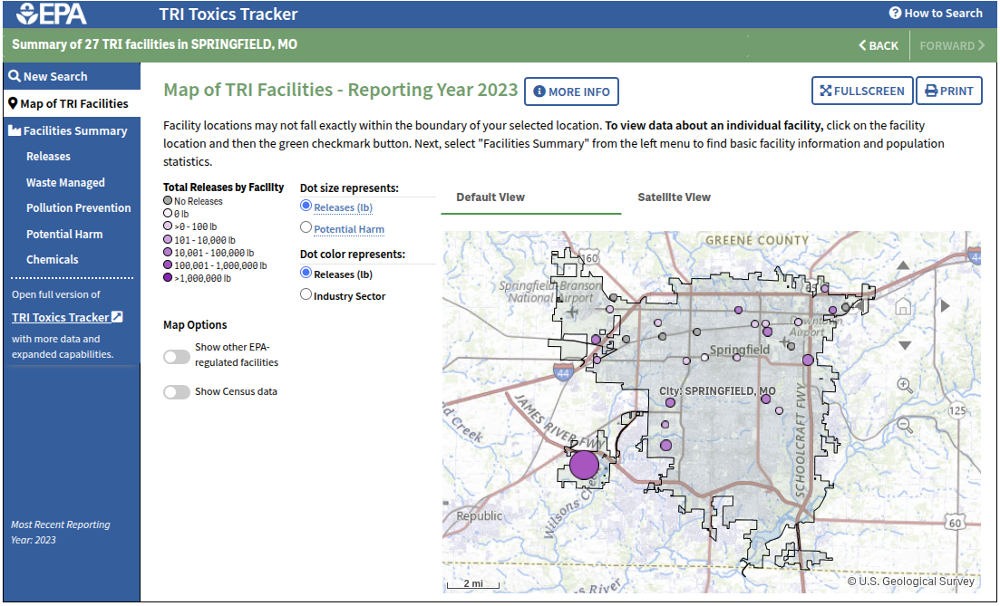
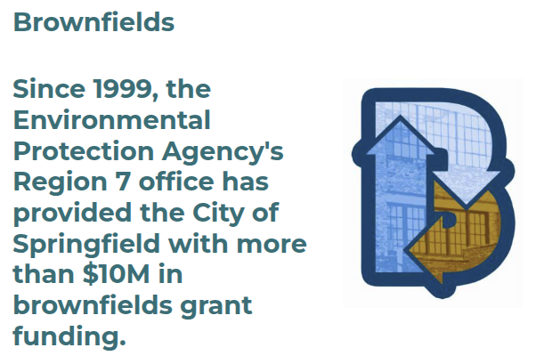
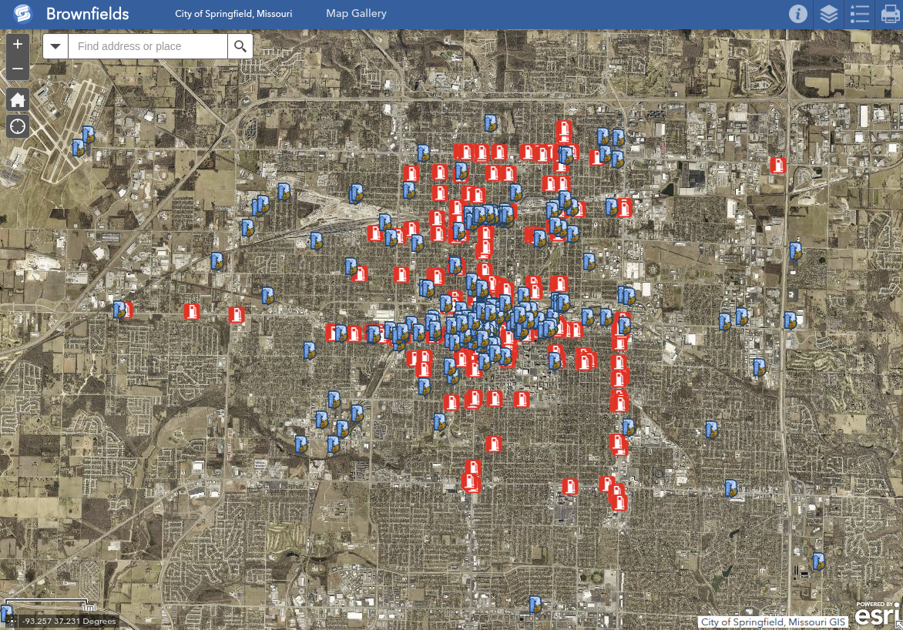
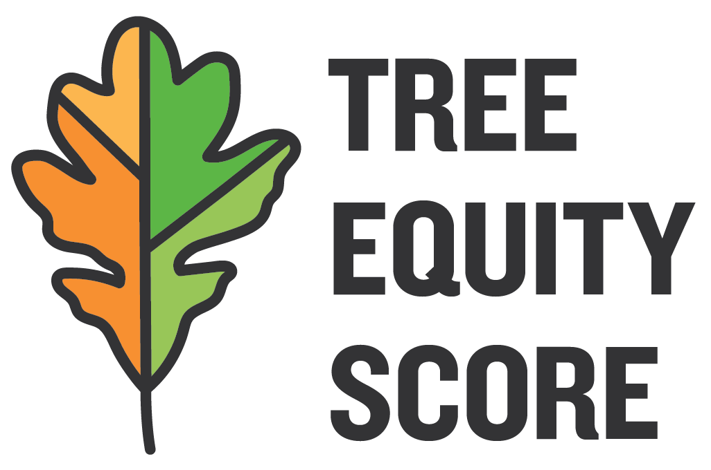
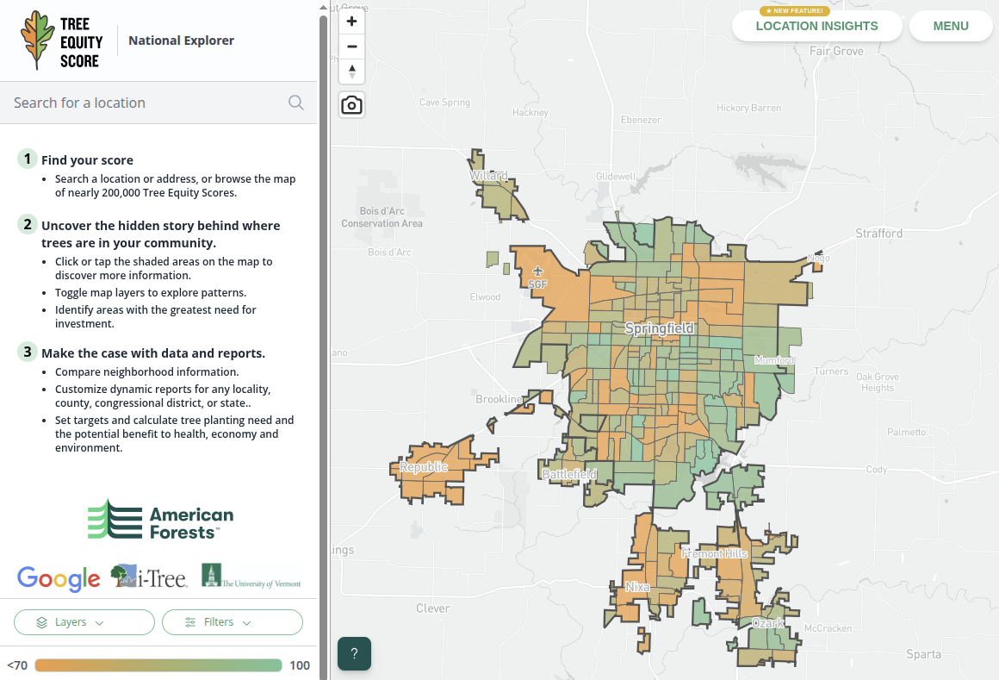
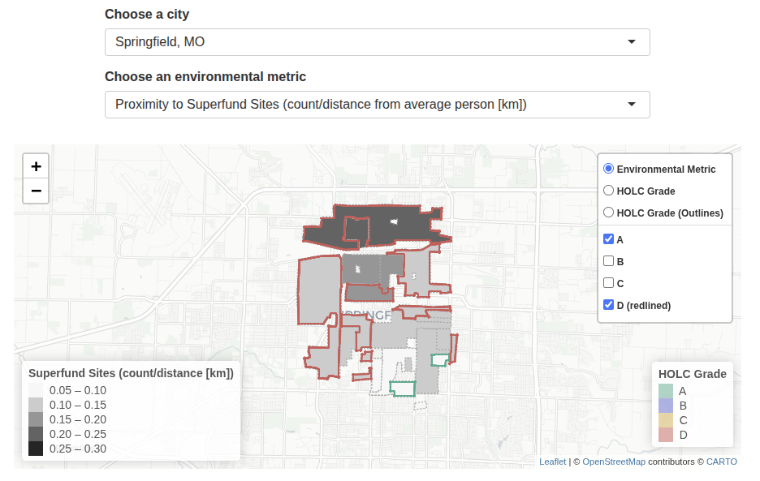

Section 3: Current Challenges in American Environmentalism
3.1 Environmental Justice
Justin Leinaweaver (Fall 2026)
Ozark’s Food Harvest Distribution Center
2810 N. Cedarbrook Ave
PLEASE carpool (limited parking)
You MUST wear closed toe shoes
Details on Canvas
Springfield Community Gardens
1126 N. Broadway Ave
Carpool for EC
Details on Canvas

The Environmental Justice Problem
The Environmental Justice Problem in SGF
Census Bureau: Race, Ethnicity and Income Demographics

The EPA’s Toxics Release Inventory (TRI)
What is the aim?
How is the data collected?
How is the data audited?
The EPA’s Toxics Release Inventory (TRI)

City of Springfield Office of Economic Vitality: Brownfields
What is the aim?
How is the data collected?
How is the data audited?

City of Springfield Office of Economic Vitality: Brownfields

American Forests: Tree Equity Score
What is the aim?
How is the data collected?
How is the data audited?

American Forests: Tree Equity Score

RAND Corporation: Environmental Racism
What is the aim?
How is the data collected?
How is the data audited?
RAND Corporation: Environmental Racism

Tuesday
Thursday
Efforts to Promote Environmental Justice in Springfield
Find us a group of any kind, other than those we are visiting, who are actively working to address environmental justice issues in southwest Missouri
Details on Canvas